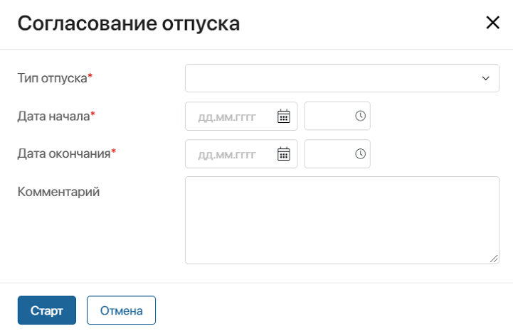
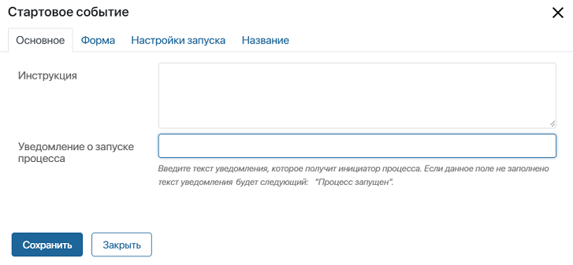
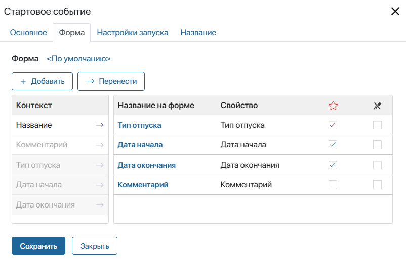
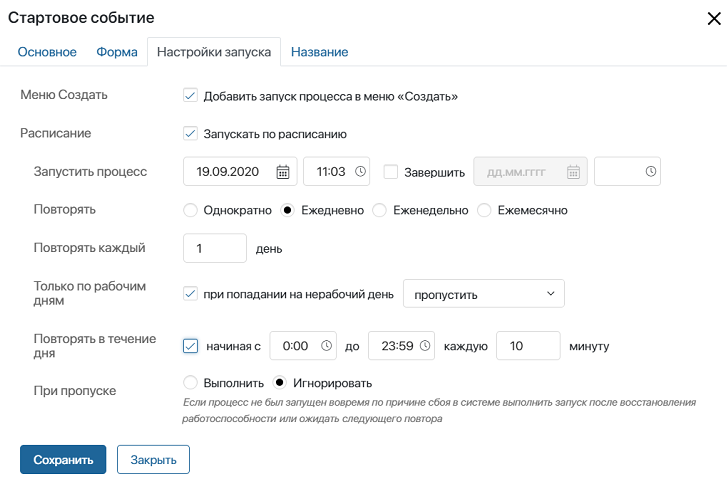
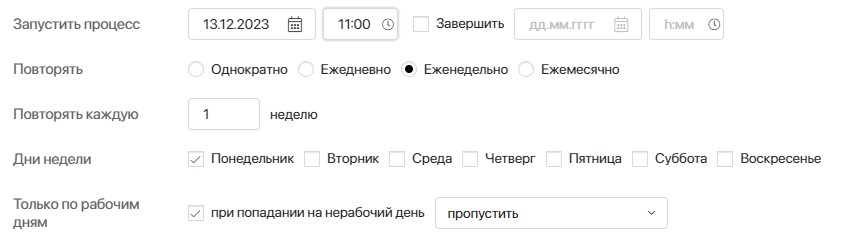
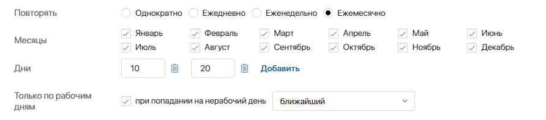
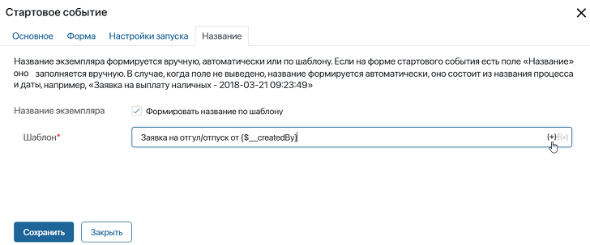
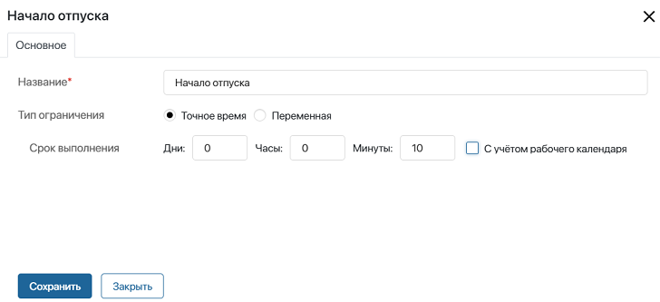
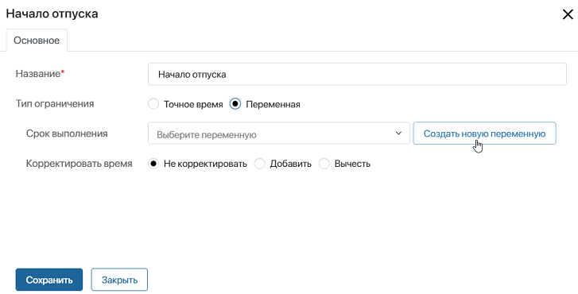
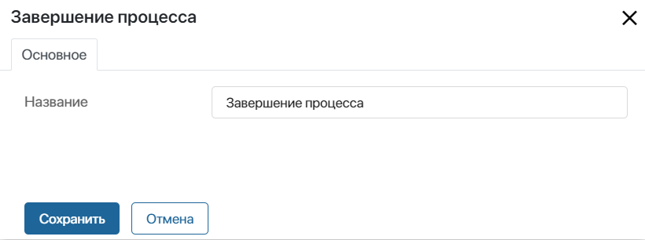

События влияют на ход процесса или на время выполнения его отдельных этапов. Они могут запускать процесс, приостанавливать его исполнение, завершать определённую ветку. На схеме события изображаются в виде окружности. Существует три основных типа событий: стартовое, промежуточное и конечное.
Стартовое событие
Стартовое событие инициирует запуск процесса и указывает, в какой точке он берёт начало. Процесс может содержать только одно стартовое событие.
В стартовом событии можно настроить параметры исполнения процесса: включить запуск по расписанию и задать шаблон наименования экземпляров. Заданные параметры будут также отображаться в настройках процесса.
Кроме того, в стартовом событии определяется форма запуска процесса. По умолчанию при запуске вручную пользователь видит окно с кнопкой для старта процесса без дополнительных данных. Название кнопки соответствует подписи к переходу, который соединяет стартовое событие со следующим блоком.
Вы можете настроить форму запуска: вынести на неё свойства из контекста процесса и задать шаблон. Тогда пользователи смогут заполнять поля и сразу передавать в процесс нужные значения.
Например, для процесса Согласование отпуска настроена форма запуска. Пользователь нажимает кнопку запуска процесса и видит окно с полями, которые добавлены на форму. Указав информацию об отпуске, сотрудник нажимает кнопку Старт. Экземпляр процесса согласования запускается с введёнными данными.

Чтобы открыть окно с настройками стартового события, дважды нажмите на графический элемент на схеме процесса.
Вкладка «Основное»
На этой вкладке представлена общая информация о процессе:

- Инструкция — краткое описание процесса или руководство для заполнения полей, которое отображается на форме запуска;
- Уведомление о запуске процесса — оповещение, которое пользователь увидит вверху экрана после того, как запустит процесс.
Вкладка «Форма»
На этой вкладке вы можете задать внешний вид формы запуска. Настройка формы осуществляется таким же образом, как для графического элемента Задача.
В столбце Контекст отображаются все переменные из контекста процесса. Перетащите свойства, которые будут отображаться на форме запуска, в столбец Название на форме. Для создания новой перемененной нажмите кнопку + Добавить. Переменная появится в контексте процесса, и вы можете использовать её в других блоках.

Укажите, какие переменные обязательны для заполнения , а какие доступны только для чтения . При использовании опции Только для чтения заполнено будет только поле, хранящее элемент, по которому запускается процесс.
Обратите внимание, если названия экземпляров процесса формируются по шаблону, поле Название не будет отображаться на форме стартового события, даже если оно добавлено.
Для настройки формы вы также можете использовать готовый шаблон формы или создать новый. Подробнее о создании шаблонов форм читайте в статье «Вкладка „Формы“».
Вкладка «Настройки запуска»
На этой вкладке устанавливаются способы запуска процесса. Вы можете настроить стартовое событие по расписанию с учётом текущего рабочего календаря.
начало внимание
Если график работы изменился, процессы, запускаемые с учётом нерабочего времени, нужно опубликовать повторно.
конец внимание

Меню Создать — если вы выберете эту опцию, то сотрудник сможет запустить процесс с главной страницы системы, нажав кнопку Создать;
Расписание — позволяет запускать процесс по расписанию. Если вы выберете эту опцию, отобразятся следующие параметры:
- Запустить процесс — автоматически подставляется текущая дата и время. Если процесс будет стартовать с определённой периодичностью, эти данные используются для вычисления каждого следующего запуска;
- Завершить — указывается дата и время, после которых процесс больше не будет инициироваться;
- Повторять — определите периодичность запуска:
- Однократно — процесс будет запущен один раз. Обратите внимание, если вы выберете дополнительный параметр Повторять в течение дня, процесс будет повторно инициирован в течение суток с указанной периодичностью;
- Ежедневно — процесс может запускаться каждый день или раз в несколько дней. Периодичность определяется в поле Повторять каждый день. Кроме того, вы можете настроить запуск процесса, если событие выпадает на нерабочий день, а также указать, нужно ли повторять запуск в течение дня;
- Еженедельно — процесс может запускаться каждую неделю или раз в несколько недель. Эту периодичность установите в поле Повторять каждую неделю. Затем выберите, в какой именно день недели должен стартовать процесс. Кроме того, вы можете указать, когда запустится процесс, если старт выпадает на нерабочий день.
Например, процесс подачи еженедельных отчётов будет запускаться каждую неделю по понедельникам в 11 часов. Если старт выпадает на нерабочий день, то процесс на этой неделе запущен не будет.

- Ежемесячно — процесс будет запускаться каждый месяц или раз в несколько месяцев. Укажите дни, когда нужно инициировать процесс.
- Только по рабочим дням — опция позволяет определить запуск процесса, если старт выпадает на нерабочий день:
- пропустить — процесс не будет запущен;
- предыдущий — процесс будет запущен в предыдущий рабочий день;
- следующий — процесс будет запущен в следующий рабочий день;
- ближайший — процесс будет запущен в ближайший рабочий день.
Например, процесс выдачи заработной платы будет запускаться ежемесячно 10 и 20 числа. Если эти даты выпадают на нерабочий день, то старт процесса будет перенесён на ближайший рабочий день.

- При пропуске — определите, нужно ли выполнить процесс после восстановления работоспособности системы, если сервер был недоступен в запланированное время запуска.
Обратите внимание, у процесса, который запускается по расписанию, форма стартового события должна быть пустой.

Вкладка «Название»

На этой вкладке вы можете добавить шаблон названия для экземпляра процесса. При запуске вам не придётся каждый раз вводить название вручную.
Шаблон* — введите название для экземпляра процесса, если нужно, добавьте контекстную переменную, например, ФИО инициатора. Список доступных переменных открывается при нажатии значка {+} в правом углу поля.
Промежуточное событие-таймер
Промежуточное событие-таймер приостанавливает процесс на определённое время. Количество промежуточных событий не ограничено, они могут располагаться на любом отрезке между начальным и конечным событиями.
В настройках события можно отредактировать название и выбрать, по какому принципу рассчитывается время ожидания.
Точное время
Если вы выберете эту опцию, то сможете указать точное время, по истечении которого выполнение процесса возобновится. Например, процесс будет ожидать ответа от заказчика два дня. После того как установленное время истечёт, исполнение процесса продолжится.
Вы можете указать срок выполнения с учётом текущего рабочего календаря. Тогда нерабочее время не будет входить в период ожидания. Например, если запуск по таймеру выпал на выходной, процесс продолжится в ближайший рабочий день. Если настройки рабочего календаря изменятся, нужно перезапустить таймер и опубликовать процесс повторно, чтобы учитывать новый график работы.

Переменная
Вы можете определить дату и время, после которых выполнение процесса будет возобновлено, при помощи контекстной переменной.

- Срок выполнения — выберите переменную из списка или добавьте новую. Для этого нажмите Создать новую переменную и в открывшемся окне заполните обязательные поля: Отображаемое имя* и Имя свойства*.
При создании свойства нельзя изменить его тип, т. к. в промежуточных событиях-таймерах всегда используются переменные типа Дата/время. Однако можно указать дополнительные параметры:
- Устанавливать текущие дату и время — в качестве значения переменной будут автоматически подставляться текущие дата и время в часовом поясе данного пользователя;
- Время опционально — при заполнении переменной Дата/Время пользователь может не уточнять время.
- Корректировать время — позволяет прибавлять или убавлять дни, часы и минуты к тому времени, что хранится в переменной. Выберите опцию Добавить или Вычесть, введите величину корректировки, включите или выключите учёт рабочего календаря. Срок, после которого выполнение процесса возобновится, увеличится или уменьшится на указанное вами количество времени.
Конечное событие
Конечное событие указывает на то, в какой точке завершается процесс или одна из его веток. У конечного события не может быть исходящих переходов. Количество таких событий в процессе не ограничено. В настройках конечного события вы можете указать его название для повышения наглядности схемы процесса.
